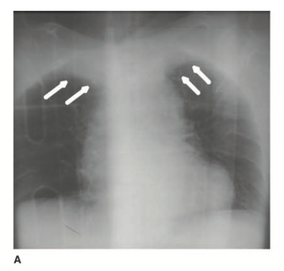
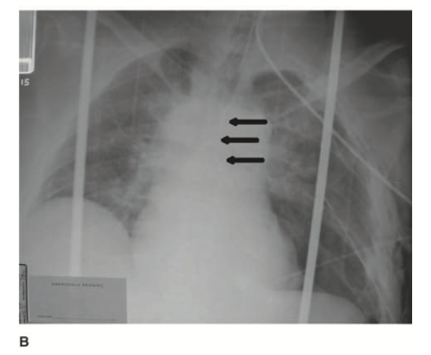

- 病因
- 穿刺性創傷（penetrating
trauma）：超過 90% 的胸腔大血管損傷的原因，死亡率接近 90%
- 鈍傷（blunt
injury）：少見，但可能造成假性動脈瘤（pseudoaneurysm）或血管破裂（frank rupture）
- 鈍性創傷胸主動脈損傷（blunt traumatic
aortic injury, BTAI/BAI）
- 常見受損血管：無名動脈（innominate artery）、鎖骨下動脈（subclavian artery）、降主動脈（descending aorta）
- 預後
- 大約 80% 的
BTAI 患者在送達醫院前死亡
- 能存活至醫院者，有
50% 在
24 小時內死亡
- 病生理
- 快速減速（rapid
deceleration）：使主動脈於動脈韌帶（ligamentum arteriosum）附近撕裂
- 側向受力機轉（lateral
mechanisms）：主動脈弓猶如槓桿，在主動脈峽部（aortic isthmus）產生扭力（torque）
- 分級
|
分級
|
描述
|
詳細說明
|
|
Grade I
|
內膜撕裂或剝離瓣
（Intimal tear or
intimal flap）
|
損傷僅限於主動脈內膜，外觀沒有異常，輕微損傷
|
|
Grade II
|
壁內血腫
（Intramural
hematoma）
|
血液滲入主動脈壁內，但未造成全層破裂（without full-thickness disruption）
|
|
Grade III
|
假性動脈瘤形成
（Pseudoaneurysm formation）
|
血液突破內膜，聚集於外膜內（adventitia），形成被包裹的假性動脈瘤
|
|
Grade IV
|
完全破裂或橫斷
（Free rupture or transection）
|
主動脈全層破裂，血液外滲
|

（箭頭為 apical
capping）
（Reference：Figure 7-23, Chapter 7 Truma, Part I Basic considerations,
Schwartz's Principles of Surgery 11th Edition,）
- 主動脈弓消失
- 左主支氣管偏移（deviation of the
left mainstem bronchus）

（箭頭顯示偏移的左主支氣管）
（Reference：Figure
7-23, Chapter 7 Truma, Part I Basic considerations, Schwartz's Principles of
Surgery 11th Edition,）
- 胸部電腦斷層
- 螺旋式胸部CT血管攝影（helical CT
angiography）
- 適應症：高能量創傷（high-energy injury
mechanisms）
- 目前單純胸部CT通常足以規劃手術方案，不太需要血管攝影了
- 治療
- 根據損傷類型
- 升主動脈、主動脈弓的單純撕裂傷：側向縫合術（lateral aortorrhaphy）
- 後側主動脈損傷（posterior
aortic injuries）、複雜的升主動脈或主動脈弓損傷：人工血管重建
- 無名動脈損傷：人工血管重建
- 可使用旁路阻斷技術（bypass exclusion technique），而無需使用體外循環
- 進行修復時，先以人工血管從近端未受損的血管段進行側端吻合（end-to-side anastomosis），再與無名動脈進行端對端吻合（end-to-end anastomosis）
- 之後再將無名動脈起始處以縫合封閉（oversewn）方式處理，以隔離假性動脈瘤或其他損傷
- 鎖骨下動脈損傷（Subclavian
artery injuries）
- 側向動脈縫合術（lateral arteriorrhaphy）或 人工血管重建（PTFE graft interposition）
- 由於此動脈具有多條分支且與周邊結構緊密連結，若有明顯的節段性缺損（segmental loss），則不建議進行端對端的原位吻合（end-to-end primary
anastomosis）
- 降主動脈損傷（Descending
blunt aortic injury, BAI）：需要緊急處置
- 若病人合併顱內出血、腹內出血，或不穩定的骨盆骨折，需優先處理，處理順序高於主動脈修補
- 為避免主動脈破裂，應於在急救區時使用 Labetalol、Esmolol（選擇性 β1 阻斷劑, selective
β1-antagonist）
- 目標為收縮壓 <100 mmHg，心率 <100 bpm
- 在進行修復前，用以控制主動脈壁壓力（aortic wall stress）
- 術式
- 胸主動脈內血管修復術（thoracic endovascular aortic repair, TEVAR）
- 血管支架經由鼠蹊部進入
- 若支架遮蓋到左鎖骨下動脈的開口（ostia of the left
subclavian artery），且出現相關症狀，可能需額外進行總頸動脈至鎖骨下動脈繞道（carotid-to-subclavian
bypass）
- 開放性修補降主動脈
- 需使用左心部分體外循環（partial
left heart bypass）以防止脊髓與腹腔內器官缺血，降低脊髓損傷造成的下半身癱瘓（paraplegia）風險，並減少左心室後負荷
- 左側開胸
- 若有大型穿刺傷或鈍傷斷裂（blunt transection），需將受損主動脈段以人工血管替代
- 主動脈內膜損傷（intimal
aortic injuries）
- Grade I ：可採取非手術處置，使用抗血小板藥物及控制血壓即可
- Grade II-IV：建議進行血管內修復，尤其是有假性動脈瘤或動脈瘤破裂時
- 合併假性動脈瘤（pseudoaneurysm）的 BTAI
Reference
- Schwartz's
Principles of Surgery 11th Edition
- Sabiston Textbook of Surgery
21st Edition